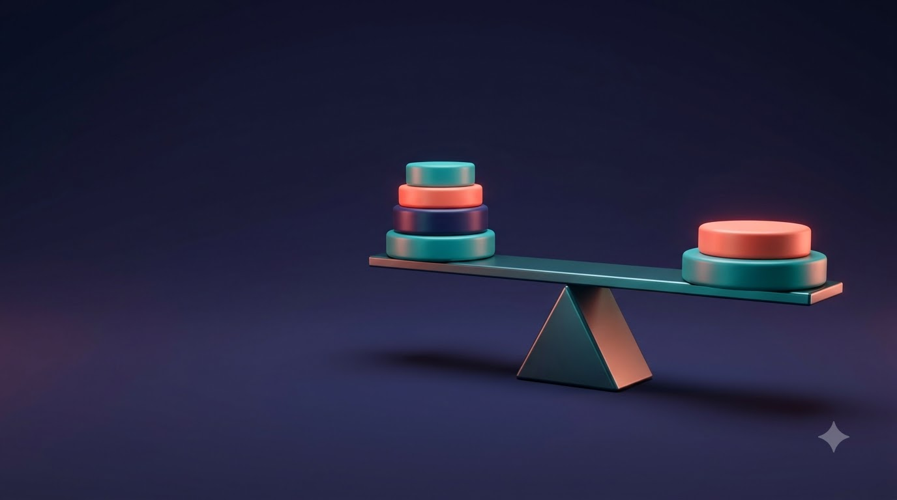

확률변수와 기댓값
불확실한 결과를 숫자로 요약
확률과 통계 · 공과대학 1학년
이미지: Google Flow로 생성
학습목표
6주차확률변수와 확률분포의 뜻
기댓값·분산·표준편차의 계산
aX + b의 평균과 분산 활용
확률변수와 확률분포
결과를 숫자로 바꾸기
확률변수란
6주차- 확률변수(random variable): 시행 결과마다 수 하나를 대응시킨 변수
- 동전 2개 던지기 → 앞면의 개수 X = 0, 1, 2
- 이산확률변수: 값이 하나하나 셀 수 있게 떨어져 있는 확률변수
- 공학 예: 하루 고장 건수, 불량품 수, 접속 오류 횟수
| 결과 | 앞앞 | 앞뒤 | 뒤앞 | 뒤뒤 |
|---|---|---|---|---|
| X (앞면 수) | 2 | 1 | 1 | 0 |
확률분포
6주차확률변수의 각 값과 그 값을 가질 확률 사이의 대응 관계
0 ≤ pi ≤ 1, p1 + p2 + … + pn = 1
꺼낸 부품 중 불량품 개수
6주차- P(X = 0) = 7C2 / 10C2 = 21/45
- P(X = 1) = 3C1 × 7C1 / 10C2 = 21/45
- P(X = 2) = 3C2 / 10C2 = 3/45
기댓값
분포의 중심

기댓값 = 분포의 무게중심
- 확률을 무게로 보면 시소가 균형을 이루는 받침점의 위치
- 자주 나오는 값 쪽으로 받침점이 이동
- 기댓값: 오래 반복했을 때 평균적으로 기대되는 값
기댓값(평균)
6주차확률변수의 각 값에 그 확률을 곱해 모두 더한 값. 평균이라고도 부름
기호 m 또는 μ로도 표시

하루 평균 고장 건수
6주차- E(X) = 0×0.5 + 1×0.3 + 2×0.15 + 3×0.05
- = 0 + 0.3 + 0.3 + 0.15
| X | 0 | 1 | 2 | 3 | 합계 |
|---|---|---|---|---|---|
| P(X = x) | 0.5 | 0.3 | 0.15 | 0.05 | 1 |
| x·P(X = x) | 0 | 0.3 | 0.3 | 0.15 | 0.75 |
기댓값은 '장기적 평균'
6주차- 주사위 눈 X의 기댓값: (1 + 2 + … + 6)/6 = 3.5
- 3.5라는 눈은 실제로 나올 수 없는 값
- 여러 번 반복할수록 평균이 가까워지는 값
- → 한 번의 예측값이 아니라 장기적 평균
분산과 표준편차
흩어진 정도
평균이 같아도 흩어진 정도는 다름
6주차

두 기계 모두 평균 길이 10 mm, 기계 B 제품의 길이가 더 들쭉날쭉
분산과 표준편차
6주차확률변수의 값이 평균 m에서 흩어진 정도
표준편차 σ(X) = √V(X): 원래 단위로 되돌린 값
| 기계 A | 기계 B | |
|---|---|---|
| 평균 | 10 | 10 |
| 분산 | 0.2 | 2 |
| 표준편차 | 약 0.45 | 약 1.41 |
고장 건수의 분산
6주차- E(X2) = 0×0.5 + 1×0.3 + 4×0.15 + 9×0.05 = 1.35
- V(X) = 1.35 − 0.752 = 1.35 − 0.5625
- σ(X) = √0.7875
aX + b의 평균과 분산
단위 변환과 비용 계산
확률변수 aX + b
6주차단위 변환이나 비용 계산처럼 일차식으로 바꾼 확률변수
σ(aX + b) = |a|σ(X). 더하는 b는 흩어진 정도와 무관
| 변환 | 평균 | 분산 | 표준편차 |
|---|---|---|---|
| X + b | b만큼 이동 | 불변 | 불변 |
| aX | a배 | a2배 | |a|배 |
하루 수리 비용
6주차- E(Y) = 20 × 0.75 + 10 = 25
- V(Y) = 202 × 0.7875 = 315
- σ(Y) = 20 × 0.887 ≈ 17.7
확인 퀴즈
6주차P(X=1) = 0.2, P(X=2) = 0.5, P(X=3) = 0.3일 때 E(X)
→ 0.2 + 1.0 + 0.9 = 2.1
E(X) = 4, V(X) = 2일 때 E(3X − 1)과 V(3X − 1)
→ E = 11, V = 9 × 2 = 18
P(X=0) = a, P(X=1) = 0.3, P(X=2) = 0.5일 때 a의 값
→ 1 − 0.3 − 0.5 = 0.2
6주차 정리
확률분포
각 값의 확률, 합은 1
기댓값
E(X) = Σ xipi, 분포의 무게중심
분산
V(X) = E(X2) − {E(X)}2, σ = √V
aX + b
평균 aE(X) + b, 분산 a2V(X)
다음 주: 이항분포
이미지 출처
6주차| 자료 | 작가 | 라이선스 |
|---|---|---|
| 주차 표지 이미지 | Google Flow로 생성 | AI 생성 |
| Playground seesaw | Killarnee | CC BY-SA 4.0 |
사진: Wikimedia Commons의 자유 라이선스 이미지 · 그래프: 직접 계산해 그림